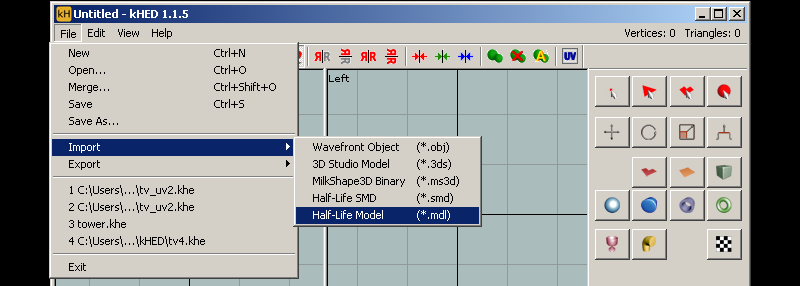

kHED is a discontinued freeware 3d modelling program that is very easy and intuitive to use. It can compile right out of the box and even automatically creates a .QC file to go with it. kHED is an older style 3D editor that only supports editing in triangles, so you wont be able to work with edge loops or edge selection. A major drawback is that kHED does not have rigging so you are limited to static props. However, you can save as MS3D so you can move it into MilkShape3d for rigging. kHED can be downloaded here: Official site
Jump to Importing Meshes
Exporting Reference Mesh
1) Drag and drop or copy your studiomdl.exe into the kHED install folder.
2) Go to File > Export "Half-Life Model" and export to the folder that has all your textures for your model
3) You will see a cmd prompt and it will auto compile your model. You are done unless you want to edit the generated .QC and then feed it into studiomdl or use Crowbar to recompile.
If you get errors on export/autosave try running kHED as admin (also if your compiled model is 0kb)
Importing Reference Mesh
kHED has the advantage of being able to directly import a mesh from a model without having to decompile it, however in both cases of importing either from .mdl or .smd kHED does not preserve smoothing normals, and you will have to re-create them.
1) Go to File > Import "Half-Life Model" or "Half-Life Smd".

2) In this example I use a quick "Auto Smooth" to remake the smoothing groups. Further manual adjustments may be necessary. Refer to the kHED manual for more or the bonus video below.
BONUS VIDEO: Quick Static Prop
Ive made a 15 minute sped up video of a static TV prop from start to finish. I went for quick and dirty so most of the stuff is PS layer style effects.
Things to note on the video: